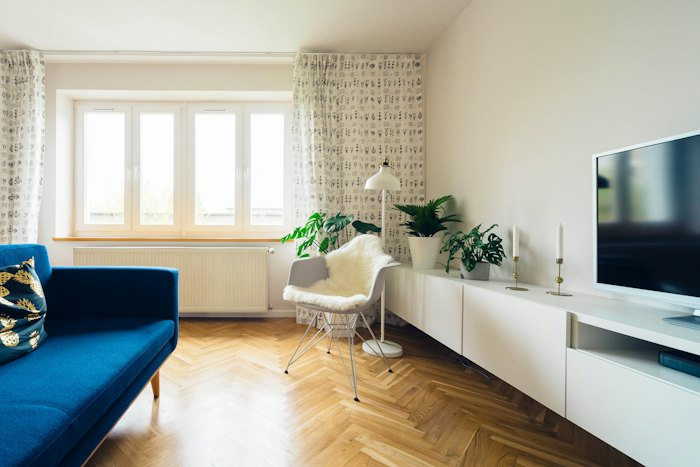
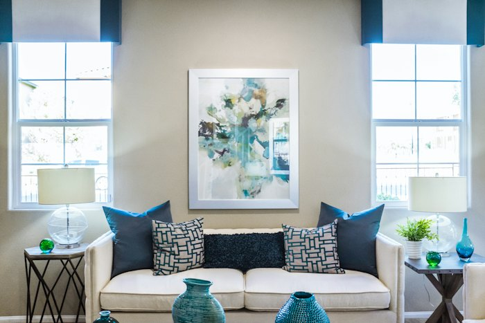
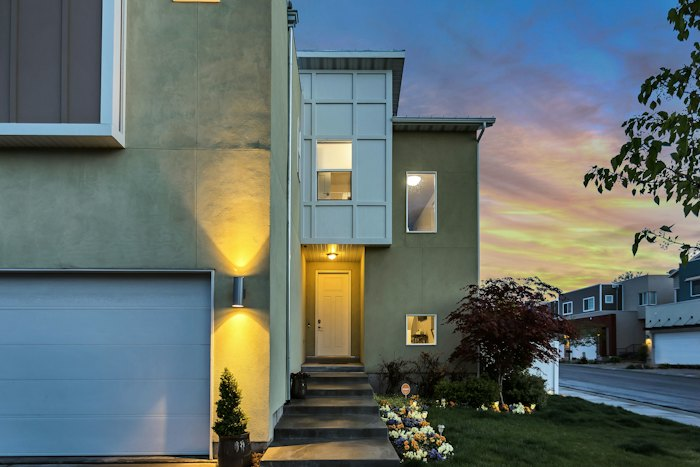

The story in brief
Udayam went beyond "how many houses were built" and asked "is anyone still homeless". For each family without a roof, it built a house — but it also tied them to ration cards, school enrolment, healthcare, and a community. The title to the house is in the woman of the household's name.
For Saraswati, a daily-wage worker who had lived in temporary sheets for two decades, Udayam meant more than a built structure. It meant that a ward member showed up with paperwork, that the local engineer co-designed the layout with her, and that the certificate said her name.
Udayam treated housing as a doorway — to school enrolment for the kids, to a postal address, to dignity in interactions with banks and the state. That is the part of the programme that did not show up in the construction line-item.
What changed for people
- Beneficiary lists were openly published and verified at the ward sabha — no surprises, fewer leakages.
- Houses came with the household's identity papers, ration card and school enrolment sorted in parallel.
- Local masons were trained and paid for the work — building incomes alongside infrastructure.
- Titles were issued in the woman's name by default, strengthening intra-household equity.
The officer playbook
Overview
Udayam was designed on a simple insight: the state already runs many programmes that touch the same poor household. Housing fails when it is delivered as an isolated brick-and-mortar project; it succeeds when it is the spine that aligns the rest of the welfare delivery to the same family.
Operationally, the programme combined a tight central design (eligibility, financial norms, design libraries) with strong decentralised delivery — the Local Self-Government Department (LSGD), Panchayats and ward sabhas drove implementation, beneficiary selection and quality assurance.
Across phases, Udayam's distinctiveness has been its insistence on equity by design: women's title, SC/ST/transgender priority, and convergence with health, education and livelihoods at the same address.
Challenges
Beneficiary selection without leakage
Every state housing programme suffers from elite capture and exclusion errors. Public ward-sabha verification and a published, appealable list became non-negotiable.
Land tenure for the truly landless
A house needs a plot. Programmes for the absolutely landless required state-land allotment, family-pattam reforms, and creative use of common land.
Convergence fatigue
Health, education and livelihood departments had their own priorities. Aligning them to the same household required relentless ward-level case management.
Quality vs. speed
Pressure to publish completion numbers can compromise build quality. Random third-party inspections and citizen sign-off were built in to resist that pressure.
What was done
- Created a single beneficiary database for housing-related schemes, with publishable lists at the ward level.
- Mandated title in the woman of the household's name, with limited exceptions handled at the district level.
- Built a regional design library (climate-zone appropriate) that beneficiaries could choose from with the local engineer.
- Trained and certified local masons (women included) to do the work, financed through the housing budget.
- Convergence trackers at the ward level: each Udayam household was tagged for ration, school, health, livelihood follow-through.
- Third-party quality audits and citizen sign-off before final instalment release.
Technology & systems
- Beneficiary management system with ward-level publishing and grievance windows
- Geo-tagged construction photographs at every milestone for audit
- Convergence dashboard linking housing to ration, health and education records
- Mobile-first reporting tools for ward members and engineers
- Open data publishing of completion and pendency at panchayat level
Outcomes
- Over 1.2 lakh houses sanctioned across phases, with 78% of beneficiaries from SC/ST or other marginalised groups.
- Every completed Udayam title issued in the woman of the household's name.
- Local masonry employment grew significantly; women masons trained and deployed in several districts.
- Beneficiary grievances at sanction stage fell sharply after public ward-sabha verification became standard.
- Convergence with ration, school and livelihood programmes verifiably reached over 90% of completed households.
Process flow
1. Demand identification
Ward-level survey of homeless / inadequately housed families, published for verification.
2. Public verification
Ward sabha reviews list; objections heard; final beneficiary list re-published.
3. Land and design
Plot secured (own / state / family pattam); design picked from regional library with local engineer.
4. Construction
Local masons execute; geo-tagged photos and instalment releases keyed to milestones.
5. Convergence
Ration, school, health and livelihood services linked to the address before handover.
6. Quality and handover
Third-party inspection; citizen sign-off; final instalment; title issued in the woman's name.
Replication toolkit
- Ward-sabha beneficiary verification SOP
- Regional design library (climate-appropriate house designs)
- Local mason training curriculum and certification framework
- Convergence tracker template (housing × ration × school × health × livelihood)
- Third-party quality audit checklist and sign-off forms
- Women's title issuance protocol and family exception rules
On the ground



How it unfolded
- Phase I
Universalisation push
Programme launched with the goal of ending visible homelessness in the state; ward-level lists begin.
- Phase II
Equity by design
Women's title default, SC/ST/transgender priority, and convergence tracker introduced.
- Phase III
Quality and dignity
Regional design library, third-party audits and citizen sign-off institutionalised.
- Ongoing
Beyond housing
Programme repositioned as a convergence engine — housing as the spine for whole-family welfare delivery.
Documents & templates
Request any of these by email — we will share what is available.
Want to adapt Udayam in your district?
Tell us your context and constraints — we will connect you with the toolkit and the people who built it.